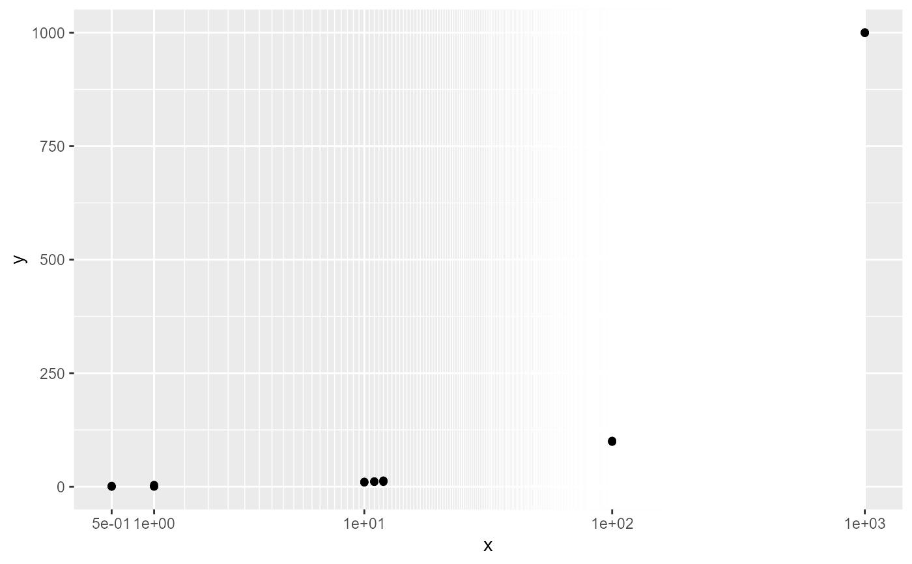

Transformation for continuous data with a finite number of distinct values
Source:R/helper_axis2.R
trans_loglinear.Rdtrans_loglinear() derives a log transformation from a numerical vector with a smaller number (ideally < 30) of distinct values.
The return can be used with function ggplot::scale_x_continuous()
or ggplot::scale_y_continuous() to create a desired axis.
Arguments
- x
A numerical vector used in a plot as (typically)
x- nb
An integer for the maximum number of breaks. Default=30
- int
One of
NA for a value calculated automatically
A real number (>=0) for the shift before log transform
- scale
One of
NA for a value calculated automatically
A real number (>0) for the scale before log transform
- mindist
One of
NA for a default value set to 0.03
A real number between 0 and 0.2 for the minimum distance ratio between major ticks
Examples
library(ggplot2)
pdt=data.frame(x=rep(c(0.5, 1, 10,11,12, 100, 1000), each=5))
pdt$y=pdt$x+rnorm(length(pdt$x))
t=trans_loglinear(pdt$x)
ggplot(pdt, aes(x=x, y=y))+geom_point()+scale_x_continuous(trans=t)
